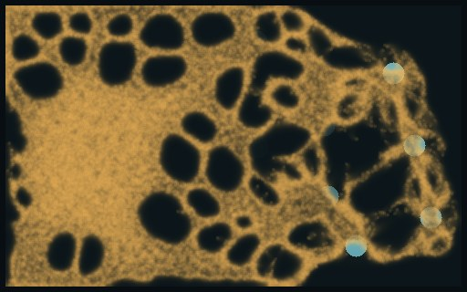
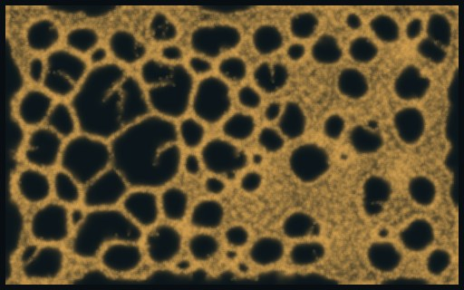
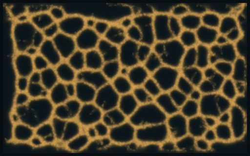
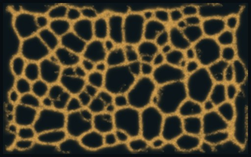
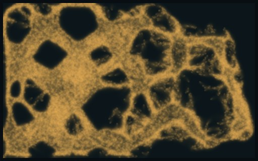
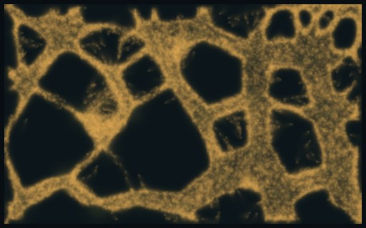
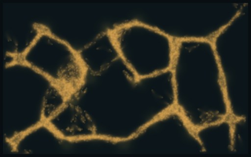
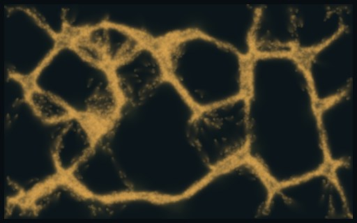

Food sets how big the mould gets. What it follows sets its shape.
The same mould on the same 512 × 320 world, with four kinds of food. Every walker eats by the same rule: an equal share of what its cell loses, upkeep 0.001 a step, divide when full, starve when empty. Only the food's layout changes, and the mould comes out as roads, a boom and bust, a fine net or a coarse one.
Grass and crystals in one world
The Larder thread's world: 23 crystals that run dry, with charge that evens out inside each crystal. 5,000 walkers to start in 50,000 slots. Grass, where it is on, starts full on every cell, and walkers lean toward fresh grass. Stills at 5, 10, 20 and 60 s, with the walkers alive, the food left and the closed loops in the net.
Crystals only23 crystals that run dry; nothing to eat between them.
Crystals on grass that regrowsThe same, with grass growing back at 0.0001 a step.

5 salive 49,576grass 20% leftloops 46

10 salive 49,575grass 2% leftloops 74

20 salive 14,077grass 2.5% leftloops 95

60 salive 14,312grass 2.5% leftloops 104
Grass that regrows, piles that only smellCrystal charge 0: the 23 piles still give off scent at full strength but feed nothing.

5 salive 49,449grass 26% leftloops 35

10 salive 48,705grass 6% leftloops 24

20 salive 9,021grass 10% leftloops 6

60 salive 12,444grass 9% leftloops 14
What it shows
Crystals alone give roads. Food only at the crystals means only tubes between them survive. With crystals that run dry, the mould peaks at 2,400 walkers, eats 99% of the charge and is nearly gone by 30 s.
Grass that never comes back is a boom and bust. The mould fills its 50,000 slots by 5 s, about 20 times the size it reaches on crystals alone. It eats the grass and every crystal by 10 s, and it is dead by 40 s, sooner than on crystals alone.
Grass that regrows sets a steady size and a fine net. After the same boom, the mould settles at about 14,000 walkers in an even net of small cells (95-104 loops) over the whole dish. The crystals are eaten in the first 10 s; after that the grass alone holds it.
Smell bends the net into roads. The last row has the same grass, but the 23 piles keep smelling and feed nothing. The net comes out coarse, with thick tubes running between the piles (6-14 loops). In the row above, eaten crystals stop smelling, so only the grass steers the walkers. The amount of food sets the size; what the walkers follow sets the shape.
In this world the grass outweighs the crystals by far. With grass under them, the crystals are a snack the mould finishes in 10 s. If the real game has both, the crystals need to be much richer than the grass, or the grass much thinner, for the crystals to matter.
One seed, so these are looks, not counts across seeds. Three of the four runs hit the 50,000-slot cap early, so slots, not food, cap their boom.
Walker count
Running on the GTX 1070 now. Jenson's dish, 1024 × 640, changing only the walker count (32,000 to 2,000,000) and the crowd limit (on or off), 8 seeds each. The deciding measure, named before the run, is the closed loops at 30 s. This section fills in when it finishes.